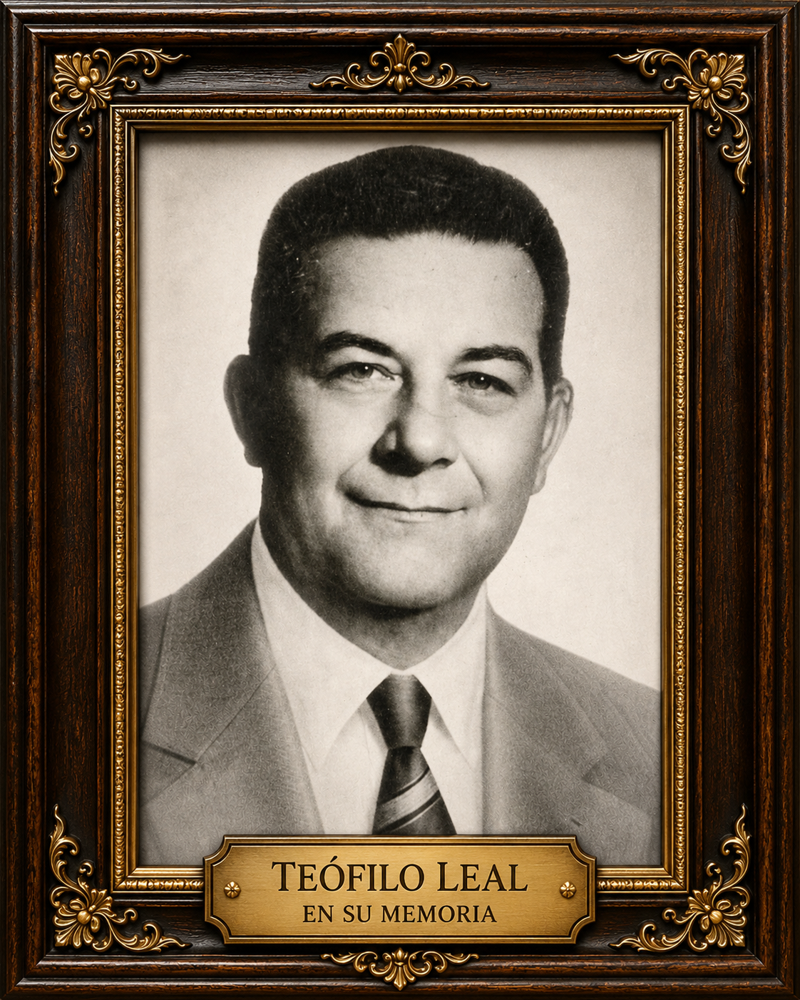
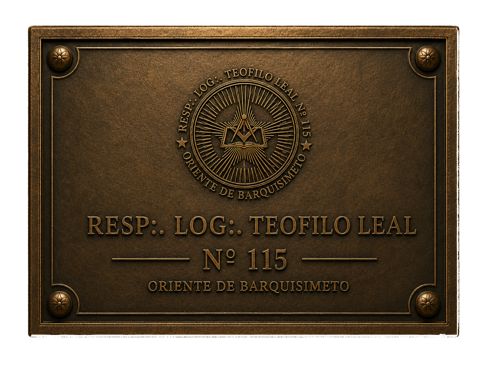

I
Libertad
El pensamiento libre es la primera piedra
del hombre que trabaja en sí mismo.
Respetable Logia Simbólica · Oriente de Barquisimeto
A∴ L∴ G∴ D∴ G∴ A∴ D∴ U∴
I
El pensamiento libre es la primera piedra
del hombre que trabaja en sí mismo.
II
Ante la verdad, todos los hombres son iguales
sin distinción de origen ni nombre.
III
El trabajo compartido une lo que la diferencia
separa y edifica lo perdurable.

Conocer su legadoIn Memoriam
1866 — 1940
Actor, poeta, músico y pintor. Ejemplo luminoso de que la Masonería no separa al hombre de la cultura, sino que lo eleva por ella. Su memoria vive en cada trabajo de esta institución.
La Logia Teófilo Leal N° 115 recibe a hombres que buscan el perfeccionamiento moral e intelectual. Si sientes que este es tu camino, da el primer paso.
Tocar la puerta ✦
Una puerta no se abre
por curiosidad, sino por propósito.
Respetable Logia Simbólica Teófilo Leal N° 115
Or∴ de Barquisimeto · A∴ L∴ G∴ D∴ G∴ A∴ D∴ U∴